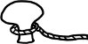

Türk edebiyatının bir mutfağı varsa eğer ve bir de kileri, orada boy boy dizili fıçı fıçı tartışma konularından kimilerine Hızır Aleyhisselam'ın ince-uzun-kemikli eli değmiştir sanki. Dermansızlıktan ziyade bıkkınlıktan bükülmüş bacaklarını aheste revan sürüyerek gelmiş ve titrek sesiyle okuyup üflemiştir gündem maddelerimize: "Artsın, eksilmesin! Taşsın, dökülmesin!" Erkek yazarların kadınları "yeterince" anlayıp anlayamayacaklarına, keza "doğru" anlatıp anlatamayacaklarına dair sorulan o malum soru kalıbı da, Hızır'ın bereket duasını almış olmalı. Olmalı ki, açıldıkça açılır aynı mevzu ve ne kadar kabarırsa kabarsın, katiyen dökülmez kabından. Sıçramaz, iz yapmaz, leke de bırakmaz hep böyle taştığıyla kaldığından. Söylenen yeni bir şey yoktur pek fazla. Çözümlemelerden ziyade ön kabullerdir konuşulan; bireyselliklerden ziyade genellemeler. Böylelikle ne vakit yeni bir roman çıksa piyasaya, aynı şüpheperest yargıyla çıkılır yazarının karşısına. "Anlatılan senin hikâyendir" sözündeki tüm hikmet birdenbire tersyüz edilip romancıya yöneltilir: "Anlattığın, senin kendi hikâyen mi, değil mi?"
Kendi hikâyesi ise ne âlâ. Önyargılarımız uyarınca zannımız odur ki, her konuyu en iyi uzmanı bilir. Evlileri en iyi evliler, köylüleri en iyi köy kökenliler yazabilir; evi olmayıp da sıçan deliğine gönderilenlere gelince... o kuytulardan öyle pek yazar çizer çıkmadığından, onların hikâyeleri "dışarıdan" anlatılabilir. Ancak mümkün mertebe, her anlatıcı özbeöz kendi çöplüğünde eşinmelidir. Aksi takdirde, düşmez-kalkmaz-iflah-olmaz peşin hükümlerimiz nüksediverir. Gidip de "el âlemi" yazmaya kalkanın ya samimiyetini-niyetini kurcalar ya da bilgisinden-sezgisinden sual ederiz. Biz işte bu sebepten hâlâ ve ısrarla, dönüp dönüp şüpheyle yaklaşma gereği duyarız kadınları anlatan erkek yazarlara.
Oysa nasıl da nobran bir genellemedir "kadın". Sormak gerek bu noktada, "Af buyurun, hangi mekânda, hangi zamandaki, hangi kadınlık halleri?" diye. Ancak böyle parça parça ayrıştırabildiğimiz takdirde, kimi "kadınlık halleri"ni anlayıp anlatabilmenin kimi kadınlara, en az erkeklere olduğu kadar uzak bir mesafede durduğu görülebilir. Ve nasıl ki tek ve mutlak ve yekpare ve yalıtılmış bir "kadın" yoksa, hatta şu "kadınlık durumu" lafının bizatihi kendisi zararı yararından katbekat fazla bir ağız alışkanlığından ibaretse, tek ve mutlak ve yekpare ve yalıtılmış bir "erkek yazarlık hali" de yoktur ortada. Velhasıl, benzer konular etrafında dönen romanlar arasında dahi ayrıştırıcı farklılık, romancının cinsiyetinde değil, kalemindedir.
Peki ama şu "erkek yazarlık hali" tek ve yekpare değilse, tastamam kaç adet ve nasıldır acaba? "Ne kadar yürek varsa Allah için çarpan, o kadar yol vardır izlenecek" diyen mutasavvıflardan feyz alarak, "Ne kadar kalem varsa edebiyat için, edebiyat içre yazan, o kadar yazarlık hali vardır" demek de mümkün ve makbuldür elbet. Ne var ki bu yazının yüzü suyu hürmetine, "kadın-karakterler-yaratan-erkek-romancı-halleri"ni ÜÇ rakamının masalsı cazibesinde sabitlemeyi deneyebiliriz. Tıpkı maddenin üç hali gibi: "katı hali-gaz hali-sıvı hali". Öte yandan, "yaratmak" ve "erkeklik" güzergâhlarından geçen her patika eninde sonunda BABA figürüne çıktığından, er ya da geç babalığın bir biçimiyle ilişkilendirilecektir bu üç halden her biri: "öz baba hali-üvey baba hali-iskele babası hali."
Maddenin katı, babalığın öz halinden hareketle yazan romancı, karakterleriyle arasındaki emir-komuta zincirini mümkün mertebe kaybetmemeye özen gösterir. Ne vakit görmek istese, ayağına çağırır onları. Sever de şüphesiz; alır okşar, hatta giydirir kuşandırır ama içlerinden hangilerini ne zaman hor görüp nasıl takdir edeceğine kendisi karar vermek ister daima. Katı halli erkek yazarın kaleminden çıkma dişi roman karakterleri, yemek borusundan aşağı bir türlü inemeyen ayva lokmalarına benzerler. Ne yutulur ne de çıkarılabilirler gerisingeri. Hiçbirinde belirgin bir aksaklık yoktur ilk bakışta. Olmuşlardır olmasına da, usta ellerden çıkma balmumundan heykeller kadar yakın olabilirler gerçeğe. "Az kalsın gerçek sanacaktım" diyebilirsiniz en fazla ama gerçek sanmazsınız onları. Öte yandan, maddenin katı halinden hareketle yazmak salt erkeklere özgü olmadığından, kadın romancılar arasında da yarattıkları karakterlerini, bilhassa da kadın karakterlerini, çimdire çimdire sevenlere, severken dövenlere sık sık rastlanır. Halide Edip Adıvar gibi...
Üvey baba halinden hareketle yazan romancıya gelince, onun kafası daha karışık, iktidarı daha az mutlakıyetçidir. Babalık ettiği karakterlerin varoluşundan tastamam, büsbütün sorumlu olduğunu düşünmediğinden, kendinden ayrı bir varoluş alanı tanır onlara. Dişi karakterlerinin, kendisini şaşırtmasından hoşlandığı gibi, gözünün önünden ayrılmadıkları müddetçe gönüllerince gezip tozmalarına dahi izin verebilir. Metinle arasında bir aşk-nefrettir sürer gider. Hayli çelişkili, bir o kadar "sinir harbi" bir niteliği vardır maddenin gaz, yazarlığın üvey baba hallerinden yazmanın.
İskele babası haline gelince, kelimenin olanca olumsuz çağrışımına rağmen, dişi karakterlerine en fazla varoluş alanı ve hakkı tanıyan romancılar bu cenahta toplanır. Bir liman gibi görür kendini. Oradan demir alıp kendi yollarına gitmelerine izin verir. Maddenin sıvı halidir bu. Kadın karakterlerinin kendisini şaşırtmasına değil sadece, kendi kendilerini biçimlendirmelerine de izin verir. Metin durmaz, akar. Sevgi Soysal gibi...
Katı halli erkek yazar kaburga kemiğinden yaratır kadın karakterini. Gaz halinden hareket eden erkek yazarsa uzaktan kontrol eder. Sıvı halinden hareket eden erkek romancı ise, kendindeki kadını ortaya koyar. Aynalar iç içe geçer. Bir de bakmışsınız ki kadın karakterinin
Jeanette Winterson heteroseksüel erkek aşkını sorgularken, erkeklerin parçalanmaktan, dağılmaktan, dağılıp da bir daha parçalarını bulamamaktan nasıl korktuklarına dikkat çeker. Bizatihi parçalanma gerektiren ve getiren aşk ilişkilerinde bu çelişki tam anlamıyla ayyuka çıkar. Heteroseksüel ilişkilerde erkek tarafı aşka en yaklaştığı kulvarda dahi, eşiğe fazla yaklaştığını, parçalanıp dağılmak üzere olduğunu hissettiği an reaksiyoner bir tavırla geri çekilip bildiği hayata döner. Winterson'a göre erkek aşkı, parçalananın sadece kadın olmasını istediği ve kendisi parçalanmadan olduğu gibi kalmakta direttiği için sürmeyecek bir aşktır. Çünkü aşk karşılıklı parçalanmak demektir. Sıvı halinden hareketle yazan ve babalıktansa iskele babalığını tercih eden erkek romancı, kadın karakterlerini parçalarken onlarla beraber parçalanmayı, şaşırmayı, toparlanamamayı göze alır. Yaratırken yıkılmayı, çoğalırken eksilmeyi... Çünkü her zaman artırmaz yazmak, eksiltir de bazen. Taşırmaz hassa bir dengede, dökülmeye parçalanmaya da sebep olur bazen.
Bu durumda, bir romanın anlatım gücü ve kanımca romancının gücü tam da "başkasının" hikâyesini kendi hikâyesi yapabilmesindedir. Edebiyat, olduğumuz insanı değil, ilk bakışta bizden tamamen farklıymış gibi görünen insanları hissedip hissettirebildiğimiz, anlayıp anlatabildiğimiz ölçüde ve müddetçe sahici bir berekete kavuşabilir. Ve ancak o zaman, taştığıyla kalmayıp, akmaya da başlayabilir.
New York